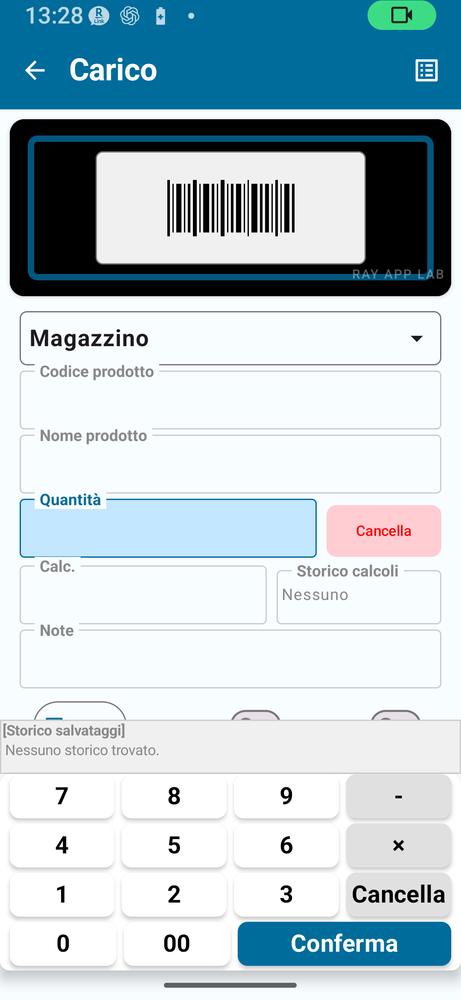
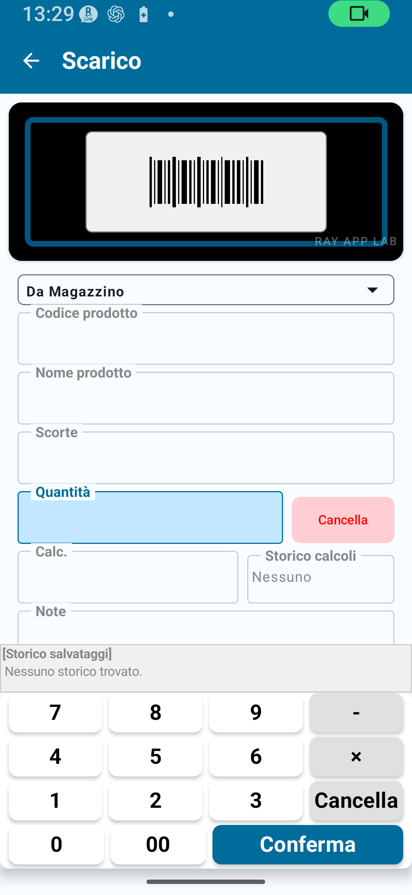
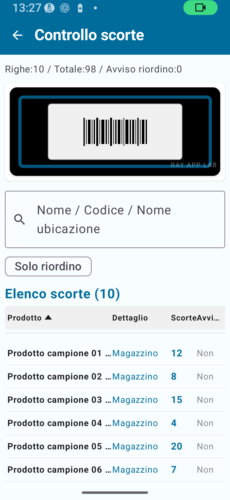
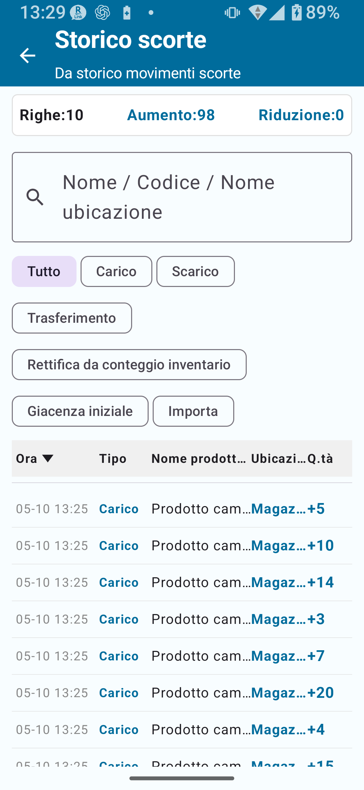
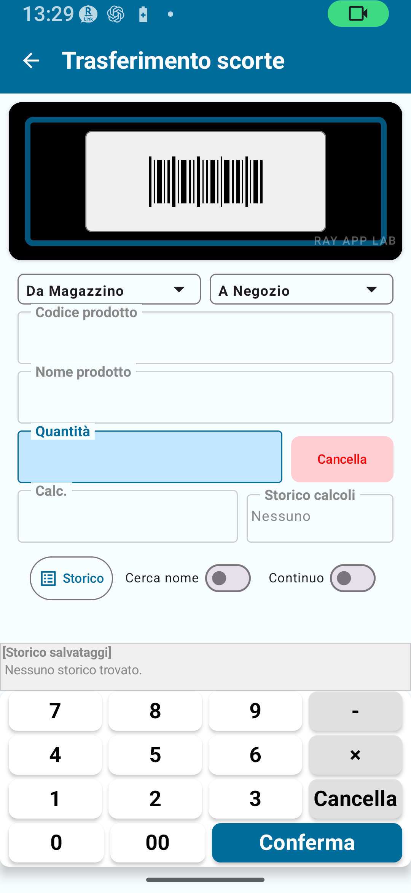

⑥ Gestione magazzino — Piano Standard (Sblocco Standard)
Cosa aggiunge il piano Standard, carico, scarico, consultazione scorte, storico, importazione/esportazione CSV, sostituzione scorte e aggiunta come carico
Argomenti trattati in questa pagina: Cosa aggiunge il Piano Standard di Gestione magazzino / Differenze rispetto al piano gratuito / Carico / Scarico / Consultazione scorte / Storico scorte / Gestione ubicazioni / Importazione ed esportazione CSV / Sostituisci scorte correnti / Aggiungi come carico / Note importanti / Flussi di lavoro consigliati
CAPITOLO 1
Panoramica del Piano Standard
Il Piano Standard di Gestione magazzino supporta più record rispetto al piano gratuito. Puoi gestire comodamente le operazioni quotidiane di carico, scarico, consultazione scorte e storico scorte; anche l'ambito della gestione delle ubicazioni viene ampliato.
Limiti del Piano Standard
Elemento
Piano gratuito
Piano Standard
Record anagrafici
Fino a 30
Fino a 300
Record dello storico scorte
Fino a 30
Fino a 1.000
Record esportati
Fino a 30
Fino a 300
Blocco rotazione schermo
✗
○
Registrazione Anagrafica ubicazioni
Limitata nel piano gratuito
Disponibile entro i limiti del Piano Standard
Modifica diretta del totale cumulativo registrato
✗
✗ (richiede il Piano Completo)
Fig. 1-1 Schermata Home Gestione magazzino
CAPITOLO 2
Differenze rispetto al piano gratuito
✅ Cosa aggiunge o amplia il Piano Standard
Limite dei record anagrafici aumentato da 30 a 300
Limite dello storico scorte aumentato da 30 a 1.000
Limite di esportazione aumentato da 30 a 300
Blocco della rotazione dello schermo disponibile
Ambito della gestione delle ubicazioni ampliato
Più facile mantenere in modo continuativo carichi, scarichi, consultazioni scorte e storico quotidiani
CAPITOLO 3
Carico (entrata stock)
L'operazione di carico aumenta le scorte. Usala quando arrivano merci, ad esempio per acquisti, ricevimento merce e transazioni simili.

Fig. 3-1 Schermata Carico
Procedura di carico
Vai in Gestione magazzino → Carico.
Scansiona un codice a barre o inserisci il codice prodotto.
Conferma il nome del prodotto. Se il codice non è registrato, procedi con la creazione di una nuova voce nell'Anagrafica prodotti.
Nella nuova voce dell'Anagrafica prodotti, registra il nome prodotto, il prezzo di vendita e il punto di riordino.
Dopo il salvataggio, torna alla schermata Carico: il codice prodotto e il nome registrati vengono compilati automaticamente.
Seleziona l'ubicazione di destinazione (magazzino, negozio ecc.).
Inserisci la quantità ricevuta.
Tocca Salva. La quantità viene aggiunta immediatamente alle scorte.
Conferma l'aggiornamento in Consultazione scorte o nello Storico scorte.
💡 Informazioni sugli attributi dell'Anagrafica prodottiIl prezzo di vendita e il punto di riordino sono proprietà gestite nell'Anagrafica prodotti: non vengono inseriti per ogni transazione di carico. Nella normale schermata Carico, concentrati su quantità, ubicazione e note.
⚠ NotaIl carico viene riflesso nelle scorte immediatamente. Conferma sempre quantità e ubicazione prima di salvare. Se dopo il salvataggio noti una quantità errata, controlla lo Storico scorte e segui le indicazioni nell'app per correggere, annullare o registrare una rettifica, a seconda del caso.
CAPITOLO 4
Scarico (uscita stock)
L'operazione di scarico riduce le scorte. Usala per vendite, trasferimenti in uscita, consegne e transazioni simili.

Fig. 4-1 Schermata Scarico
Procedura di scarico
Vai in Gestione magazzino → Scarico.
Scansiona un codice a barre o inserisci il codice prodotto.
Conferma il nome del prodotto.
Seleziona l'ubicazione di origine, cioè quella da cui esce lo stock.
Inserisci la quantità da scaricare.
Tocca Salva. La quantità viene sottratta immediatamente dalle scorte.
Conferma l'aggiornamento in Consultazione scorte o nello Storico scorte.
💡 Informazioni sul campo ScorteIl campo Scorte nella schermata Scarico mostra le scorte correnti per il prodotto e l'ubicazione selezionati: è un campo di visualizzazione, non un input modificabile. Le scorte diminuiscono quando salvi la quantità di scarico.
🚨 ImportanteNon inserire una quantità di scarico superiore alle scorte correnti. Controlla il livello delle scorte per ubicazione prima di inserire la quantità da scaricare.
CAPITOLO 5
Consultazione scorte
La Consultazione scorte mostra inizialmente il totale combinato delle scorte per prodotto. Il controllo di riapprovvigionamento confronta il totale delle scorte di tutte le ubicazioni con "Includi nel controllo di riapprovvigionamento" attivo con il punto di riordino impostato nell'Anagrafica prodotti.

Fig. 5-1 Schermata Consultazione scorte
Procedura di consultazione scorte
Vai in Gestione magazzino → Consultazione scorte.
Trova il prodotto che vuoi controllare, usando la ricerca o scorrendo l'elenco.
Individua i prodotti sotto il rispettivo punto di riordino, mostrati come articoli che richiedono riapprovvigionamento.
Tocca un prodotto per visualizzare il dettaglio per ubicazione, lo storico e le informazioni dettagliate. Nella vista con dettaglio per ubicazione, il controllo di riapprovvigionamento non viene mostrato oppure viene trattato come inattivo.
CAPITOLO 6
Storico scorte
Lo Storico scorte mostra il registro di tutte le operazioni di carico, scarico, trasferimento, rettifica da inventario fisico, scorte iniziali e importazione CSV.

Fig. 6-1 Schermata Storico scorte
Cosa puoi vedere nello Storico scorte
Data/ora e tipo di operazione (carico, scarico, trasferimento, rettifica ecc.)
Codice prodotto e nome prodotto
Ubicazione e variazione della quantità
Note
💡 SuggerimentoSe i conteggi delle scorte non tornano, scorri indietro nello Storico scorte per controllare errori di inserimento o rettifiche inattese.
CAPITOLO 7
Gestione ubicazioni
Il Piano Standard usa principalmente le ubicazioni di base "Magazzino" e "Negozio".
Modalità
Ubicazioni disponibili
Semplice A
Solo Magazzino
Semplice B
Magazzino + Negozio
Semplice C
Solo Negozio
Trasferimenti di scorte
Un trasferimento di scorte sposta quantità di inventario da un'ubicazione a un'altra.
⚠ NotaNon effettuare trasferimenti tra la stessa ubicazione. Se hai una sola ubicazione (ad esempio Semplice A), i trasferimenti di scorte non sono necessari: usa invece un carico, uno scarico o una correzione.
💡 SuggerimentoPer usare ubicazioni dettagliate (ad esempio numeri di scaffale), devi passare alla modalità Dettaglio nelle impostazioni. La modalità Dettaglio viene usata quando si accede alle funzionalità del Piano Completo.
CAPITOLO 8
Importazione / Esportazione CSV
La Gestione magazzino consente di importare, esportare ed eseguire il backup dei dati di stock usando file CSV.
🚨 ImportanteLe operazioni di importazione CSV possono modificare i dati in modo significativo. Prima di importare, esporta sempre un CSV di backup.
Specifiche CSV per le scorte
Tipo CSV
Scopo
Colonne principali
Obbligatorie/Opzionali
Note
Disponibile in
CSV scorte (con colonna ubicazione)
Importa dati di stock specifici per ubicazione
location, item_code, quantity, product_name
location, item_code, quantity obbligatorie; product_name obbligatoria in modo condizionale
La colonna product_name è necessaria per i codici non registrati
Gestione magazzino Standard o superiore
CSV scorte (senza colonna ubicazione)
Importa dati di stock per un'ubicazione specificata
item_code, quantity, product_name
item_code, quantity obbligatorie
Seleziona l'ubicazione di destinazione al momento dell'importazione
Gestione magazzino Standard o superiore
CSV di backup
Backup e ripristino dei dati completi
Prodotti, scorte correnti, ubicazioni, categorie — più file
Richiede il set completo di backup
Può essere suddiviso in più file
Gestione magazzino Standard o superiore
Uso della schermata di mappatura colonne
Quando importi un CSV, selezioni quale colonna corrisponde a codice prodotto, nome prodotto, quantità, ubicazione e così via.
Seleziona il file CSV.
Nella schermata di mappatura colonne, assegna ogni colonna CSV al campo corrispondente (codice prodotto, quantità ecc.).
Conferma le assegnazioni ed esegui l'importazione.
⚠ Errori comuni nell'importazione CSV
Colonne obbligatorie mancanti
La stessa colonna assegnata a più di un campo
Colonna quantità vuota o non numerica
Nessuna colonna product_name selezionata per codici non registrati
Nessuna colonna ubicazione e nessuna ubicazione di destinazione selezionata
CSV vuoto o senza righe importabili

Fig. 8-1 Schermata Trasferimento scorte
CAPITOLO 9
Sostituisci scorte correnti
Sostituisci scorte correnti è una modalità di importazione CSV che tratta le quantità nel file come le nuove scorte correnti. Lo storico esistente viene conservato e la differenza viene registrata come voce di rettifica nello storico.
🚨 Importante: usa Sostituisci scorte correnti con cautela
Le righe di stock non presenti nel CSV potrebbero essere impostate a 0.
Questa operazione può avere un impatto significativo sui dati di stock esistenti: esegui sempre prima un backup.
Leggi attentamente la schermata di conferma prima di eseguire l'operazione.
Procedura per Sostituisci scorte correnti
Esporta un CSV di backup (obbligatorio).
Vai in Gestione magazzino → Importazione CSV → Sostituisci scorte correnti.
Seleziona il file CSV da importare.
Conferma la mappatura delle colonne nella schermata di mappatura.
Nella schermata di conferma, controlla attentamente i dettagli della sostituzione (contenuto della rettifica).
Se tutto è corretto, esegui l'importazione.
Verifica le voci di rettifica nello Storico scorte.
CAPITOLO 10
Aggiungi come carico
Aggiungi come carico è una modalità di importazione CSV che aggiunge le quantità del file allo stock esistente come transazione di carico: a differenza di Sostituisci scorte correnti, aggiunge alle scorte correnti invece di sovrascriverle.
Modalità importazione
Comportamento
Esempio d'uso
Sostituisci scorte correnti
Tratta le quantità CSV come le nuove scorte correnti. Registra le differenze come storico di rettifica
Correzione stock dopo inventario fisico, configurazione iniziale
Aggiungi come carico
Aggiunge le quantità CSV alle scorte correnti come carico
Importazione massiva di carichi
💡 SuggerimentoUsa Sostituisci scorte correnti quando configuri l'inventario per la prima volta e Aggiungi come carico quando devi aggiungere quantità allo stock esistente. Conferma quale modalità ti serve prima di eseguire l'importazione.
CAPITOLO 11
Note importanti
⚠ Configurazione per ubicazioni dettagliatePer usare ubicazioni dettagliate, passa alla modalità Dettaglio nelle impostazioni. Le ubicazioni dettagliate non vengono visualizzate se stai ancora usando Semplice A/B/C.
⚠ Verifica ubicazione e quantità prima di procedereCarico, scarico, trasferimenti e importazioni CSV si riflettono nelle scorte immediatamente. Conferma ubicazione e quantità prima di ogni operazione.
🚨 Esegui un backup prima delle operazioni CSVEsegui sempre un backup prima di usare Sostituisci scorte correnti, Aggiungi come carico e le operazioni di ripristino da backup.
CAPITOLO 12
Flusso di lavoro consigliato
Registra carichi e scarichi ogni giorno
Registra lo stock in entrata tramite Carico ogni volta che arrivano merci.
Registra lo stock in uscita tramite Scarico ogni volta che le merci escono.
Imposta i punti di riordino nell'Anagrafica prodotti e usa Consultazione scorte per monitorare il momento del riapprovvigionamento.
Controlli scorte regolari
Controlla regolarmente le quantità di stock: ogni settimana, ogni mese o secondo necessità.
Abbina questi controlli all'inventario fisico per verificare periodicamente che le quantità fisiche corrispondano ai record di magazzino.
Backup regolari
Esporta un CSV di backup almeno una volta al mese e salvalo sul PC o in uno spazio cloud.
💡 Considera l'upgrade al Piano Completo se:
Vuoi che i risultati dell'inventario fisico aggiornino automaticamente le scorte
Devi modificare direttamente il totale stock cumulativo registrato
Hai più di 300 prodotti
📌 Punti chiave del capitolo
Il Piano Standard alza i limiti: fino a 300 record anagrafici, 1.000 record di storico e 300 record esportati.
Carico e scarico vengono riflessi nelle scorte immediatamente: conferma quantità e ubicazione prima di salvare.
Lo Storico scorte mostra il registro completo di tutte le operazioni di carico, scarico, trasferimento e rettifica.
L'importazione CSV ha due modalità: Sostituisci scorte correnti e Aggiungi come carico. Esegui sempre un backup prima di usarle.
Le ubicazioni si impostano tramite Semplice A/B/C. Passa alla modalità Dettaglio per le ubicazioni dettagliate.
La modifica diretta del totale cumulativo registrato richiede il Piano Completo.
🔍 Note prima dell'uso
Usa l'Anagrafica ubicazioni entro le opzioni mostrate nell'app. Per la gestione di ubicazioni dettagliate, controlla la modalità attuale e valuta le funzionalità del Piano Completo quando necessario.
Se una voce di carico o scarico è stata salvata in modo errato, controlla lo Storico scorte e segui le indicazioni nell'app per correggerla, annullarla o registrare una rettifica, a seconda del caso.
Quando esporti un set CSV di backup, mantieni insieme i file generati e conservali in modo sicuro.
Controlla la schermata di trasferimento scorte nell'app prima di salvare il movimento.
Durante l'importazione CSV, controlla la mappatura colonne e la conferma finale prima di eseguire l'importazione.